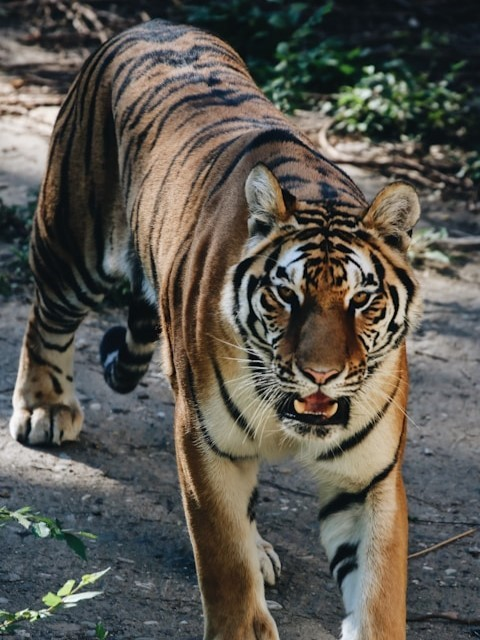
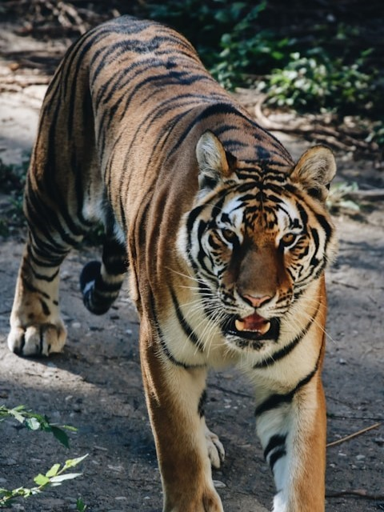

Mamalia
Harimau Sumatra
Harimau Sumatra (Panthera tigris sumatrae) merupakan subspesies harimau terkecil, asli dari Pulau Sumatra, Indonesia.
read more
Pelajari lebih dalam tentang keindahan dan keajaiban fauna yang ada di seluruh penjuru dunia
Wildlife adalah ensiklopedia online yang dirancang untuk mengedukasi dan menginspirasi pengunjung dengan mengeksplorasi keanekaragaman satwa liar di seluruh dunia.
Situs ini berfungsi sebagai sumber daya yang informatif, menghadirkan berbagai kategori hewan seperti mamalia, burung, reptil, amfibi, dan lainnya. Setiap spesies memiliki deskripsi mendalam, fakta menarik, dan upaya konservasi yang sedang dilakukan untuk melindungi mereka.

 

Explorasi beragam spesies hewan yang menghuni berbagai ekosistem
Mamalia
Harimau Sumatra (Panthera tigris sumatrae) merupakan subspesies harimau terkecil, asli dari Pulau Sumatra, Indonesia.
Mamalia
Orang utan adalah kera besar yang hidup di hutan hujan Kalimantan dan Sumatra, Indonesia serta Malaysia.
Mamalia
Owa Siamang (Symphalangus syndactylus) adalah kera hitam berlengan panjang yang ahli bergerak di atas pohon.
Aves
Shoebill adalah burung besar dari Afrika Timur dengan paruh sepanjang satu kaki yang menyerupai bakiak Belanda.
Amfibi
Katak Surinam memiliki bentuk datar dan kepala segitiga dengan mata kecil tanpa kelopak, serta melahirkan anak-anaknya melalui lubang-lubang di punggungnya
Pisces
ikan predator dari keluarga Lamnidae, dikenal karena perutnya yang berwarna putih dan kemampuannya berbaur dengan lingkungan melalui kontras warna tubuh.

Reptilia
Veiled chameleon memiliki tonjolan kepala untuk menyalurkan air dan merupakan pemakan serangga yang hidup di pohon-pohon di Saudi Arabia dan Yaman.
Koleksi beragam foto dari berbagai spesies hewan dari seluruh penjuru bumi